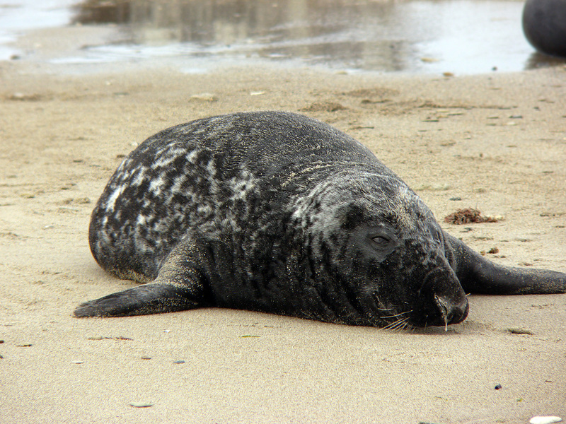

Verspreiding en leefgebied van de grijze zeehond
Grijze zeehonden leven langs de kusten van de Noord-Atlantische Oceaan. In de Oostzee, bij IJsland, de Faeröer eilanden, Noorwegen tot Groot-Brittannië en bij Noord-Oost Canada kun je ze tegenkomen.
In de Noordzee leven de meeste grijze zeehonden rond de Schotse eilanden en langs de Britse kust. Hier leeft ongeveer 40% van alle grijze zeehonden van de wereld en 95% van alle grijze zeehonden van Europa. In de hele Noordzee leefden in 1965 zo’n 30.000. Nu leven er zo’n 150.000 grijze zeehonden. Dit komt vooral omdat er vanaf eind jaren zeventig van de vorige eeuw geen vergunningen meer worden gegeven voor de commerciële jacht op grijze zeehonden.
In het Nederlandse deel van de Waddenzee ontstonden eerst twee kolonies aan de beide kanten van de vaargeul naar Terschelling en Vlieland. Sinds ongeveer 2000 komen ook op de zandplaten rond Texel, zoals Hengst en de Razende Bol, grijze zeehonden voor. In het Zeeuwse kustgebied werden er in 2013 909 grijze zeehonden waargenomen. Af en toe duikt de grijze zeehond ook in zoet water op.
In de Waddenzee ontstonden in de jaren 80 de eerste serieuze kolonies, één in het Duitse Schleswig-Holstein en één in Nederland tussen Terschelling en Vlieland. De eerste waarnemingen dateren uit de tweede helft van de jaren 60, toen de eerste grijze zeehonden Schleswig-Holstein werden gezien. Sinds de eeuwwisseling komen ook op de zandplaten rond Texel, zoals Hengst en de Razende Bol, grijze zeehonden voor. In het Zeeuwse kustgebied werden er in 2013 909 grijze zeehonden waargenomen. Af en toe duikt de grijze zeehond ook in zoet water op.
De eerste kolonies in Denemarken ontstonden in 2015, waardoor de gehele internationale Waddenzee nu door grijze zeehonden bewoond is. In de winter van 2017-2018 werden er 6144 grijze zeehonden geteld in de hele Waddenzee, waarvan 1377 pups.